Clock One
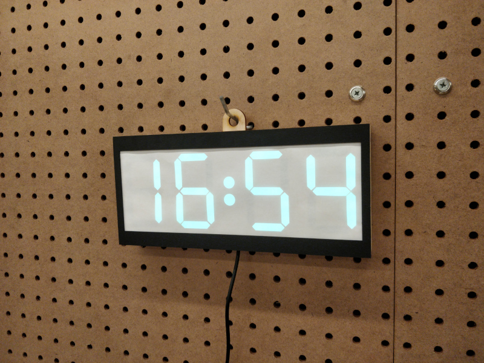I wanted to build my first clock as quickly as possible while still waking up a few interesting fabrication processes. I decided to spin a custom printed circuit board using the Bantam PCB mill, and designed the case in Fusion360 to be laser-cut out of 1/8" plywood. The board hosts a Microchip SAMD21G18 microcontroller running an Adafruit Circuit Playground Express bootloader, and can be reprogrammed via a USB-C port which also provides power to the clock during operation. The microcontroller talks via I2C to a Microchip MCP7940 realtime clock, which manages a 32.768 kHz quartz osillator and a coin-cell battery back-up. For the display, I hacked apart a convenient 1-meter spool of APA104 addressible LEDs, which are diffused by a bit of typing paper and controlled using the Arduino FastLED library.
Files
fabrication files in *.dxf formatPCB files via KiCad 5.x, including symbols/footprints
Arduino firmware, without RTC or button support
Current Status
As of late March, basic clock functions work! It displays time, changes color once per minute, and knows to roll over minutes at :59 and hours at :23. I haven't implemented a clock setting function with the two onboard pushbuttons, so the easiest way to set the time is to plug the clock in at 16:48, its hardcoded power-on setpoint. I also haven't written a driver for the RTC, so the clock uses the built-in SAMD21 RC oscillator and Arduino millis() function, losing a somewhat pathetic ~half hour per day. But for now, it illustrates the concept I hoped to get across and I'm excited to work on other things.Build
milling the PCB: 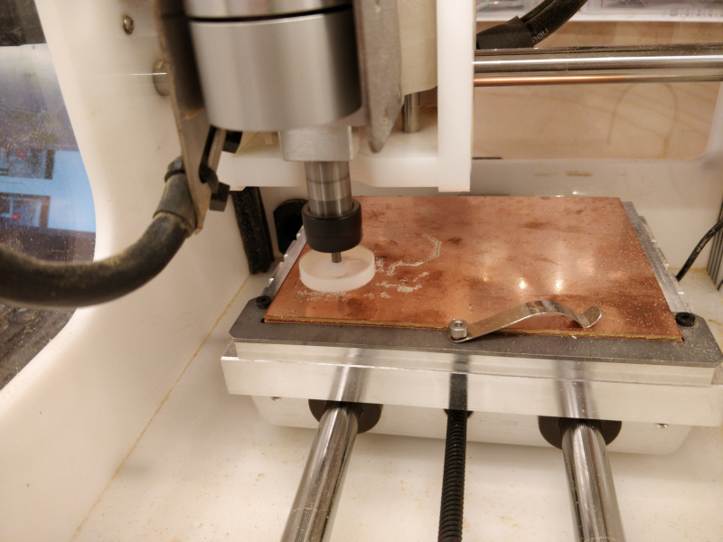PCB assembly finished, incl. somewhat sketchy (but quite robust) USB-C wiring using a daughterboard: 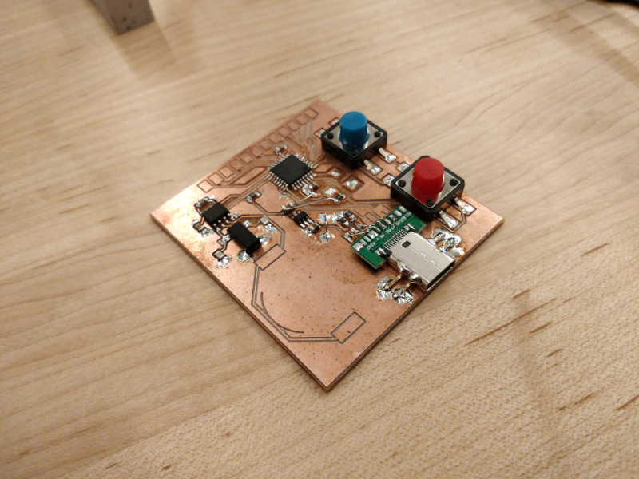
using Adafruit_DAP on another Circuit Playground Express to program the bootloader: 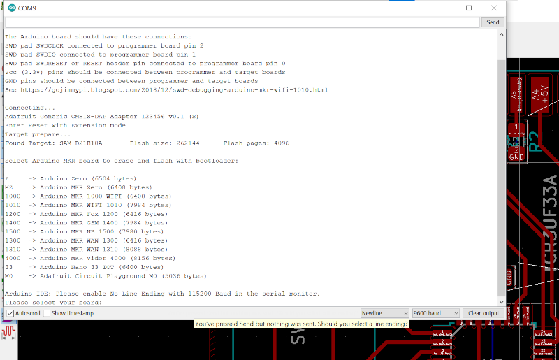
testing the current consumption of the full LED strip to stay under 500 mA; ~50% brightness is ~300 mA, which is perfect: 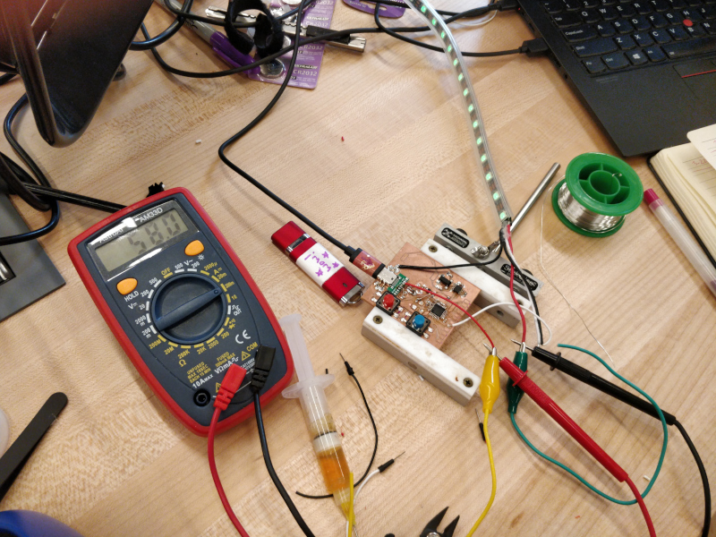
adding kerf offsets in Fusion360 after a few test cuts: 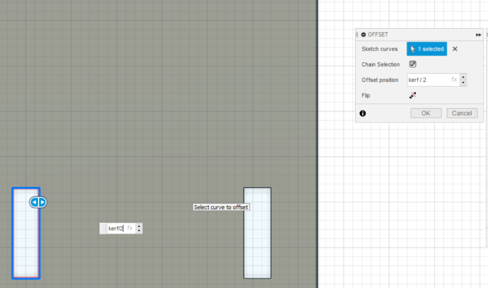
cutting out parts using the Trotec Speedy 400 flexx: 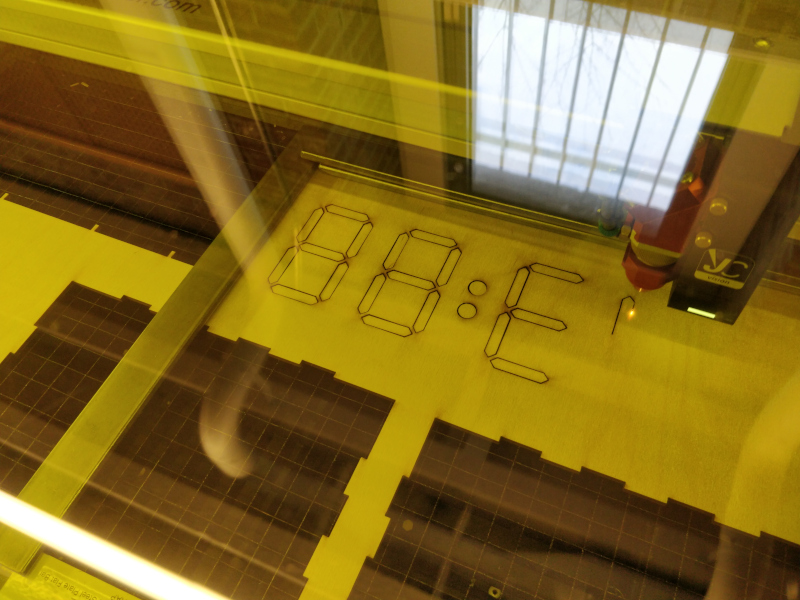
slicing APA104s into one- or two-segment groups: 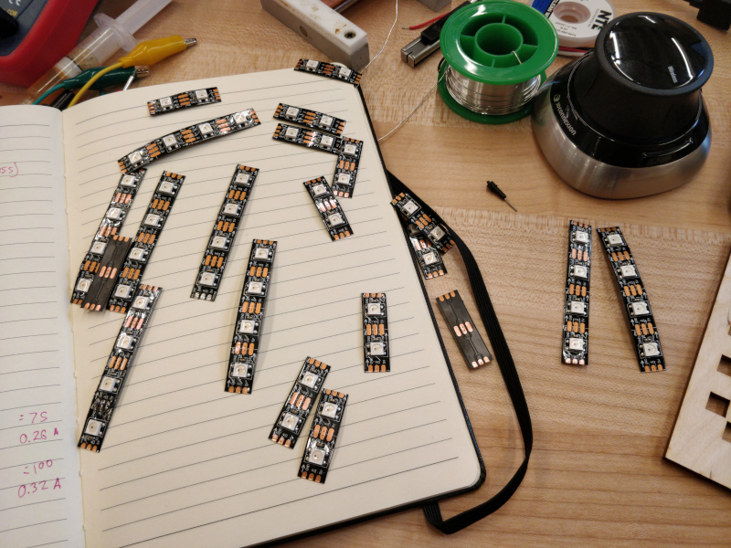
halfway through display wiring: 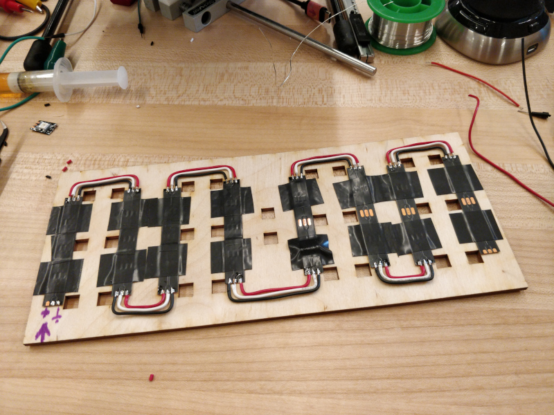
diffuser tests: 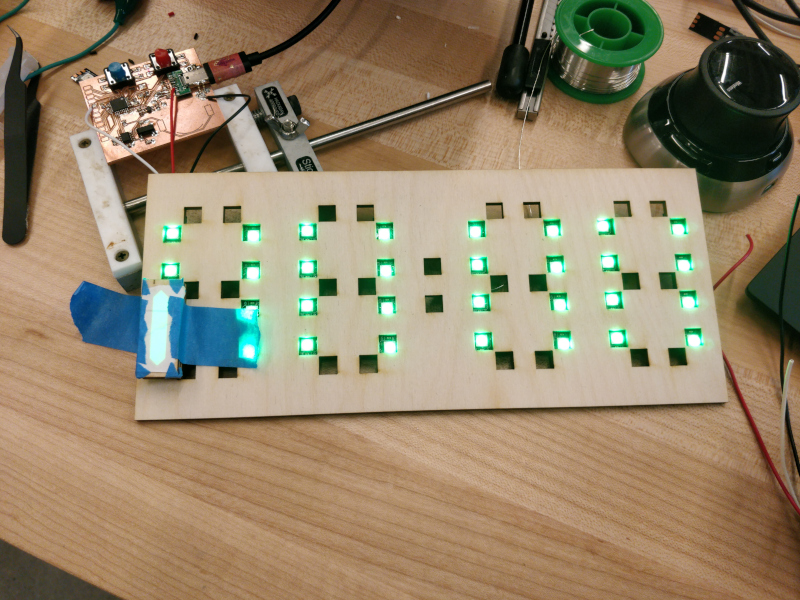
some gentle mallet-mediated assembly: 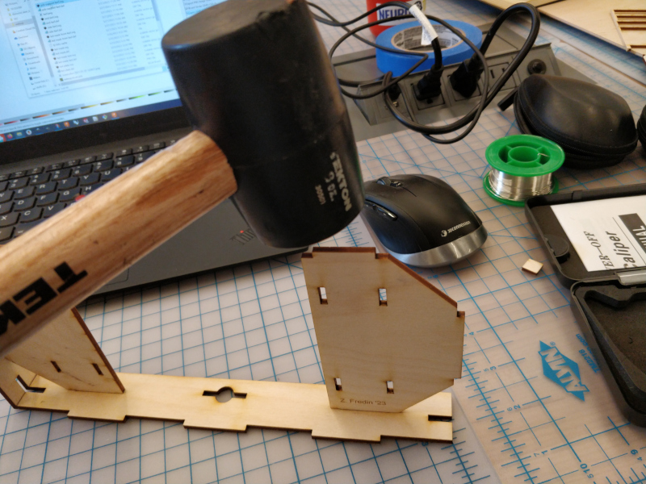
reverse side of clock after assembly, showing various press-fit wedges to hold in the PCB and display layers: 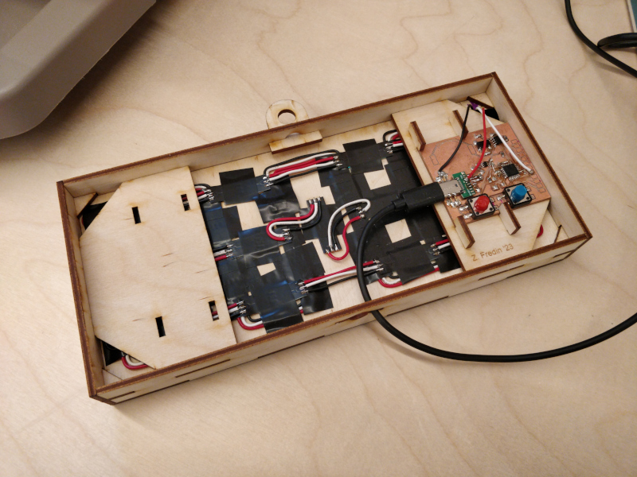

This work is licensed under a Creative Commons Attribution-ShareAlike 4.0 International License.
© zach fredin, 2023